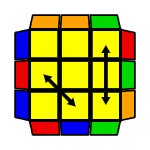

Algoritmusok
Ez az oldal a leggyakrabban használt Rubik kocka algoritmusokat tartalmazza, amelyek segítenek a különböző mintázatok és helyzetek megoldásában.
| Név | Eset | Algoritmus | Csoport |
|---|---|---|---|
| V | R' U R' U' y R' F' R2 U' R' U R' F R F | Átlós Sarok Csere | |
| Y | F R U' R' U' R U R' F' R U R' U' R' F R F' | Átlós Sarok Csere | |
| H | M2 U M2 U2 M2 U M2 | Csak Oldalak | |
| Ua | M2 U M U2 M' U M2 | Csak Oldalak | |
| Ub | M2 U' M U2 M' U' M2 | Csak Oldalak | |
| Z | M' U M2 U M2 U M' U2 M2 | Csak Oldalak | |
| Ja | x R2 F R F' R U2 r' U r U2 | Szomszédos Sarok Csere | |
| Jb | R U R' F' R U R' U' R' F R2 U' R' | Szomszédos Sarok Csere | |
| Ra | R U' R' U' R U R D R' U' R D' R' U2 R' | Szomszédos Sarok Csere | |
| Rb |  | R2 F R U R U' R' F' R U2 R' U2 R | Szomszédos Sarok Csere |
| T | R U R' U' R' F R2 U' R' U' R U R' F' | Szomszédos Sarok Csere | |
| E | x' L' U L D' L' U' L D L' U' L D' L' U L D | Átlós Sarok Csere | |
| Na | R U R' U R U R' F' R U R' U' R' F R2 U' R' U2 R U' R' | Átlós Sarok Csere | |
| Nb | R' U R U' R' F' U' F R U R' F R' F' R U' R | Átlós Sarok Csere | |
| Aa | x L2 D2 L' U' L D2 L' U L' | Szomszédos Sarok Csere | |
| Ab | x' L2 D2 L U L' D2 L U' L | Szomszédos Sarok Csere | |
| F | R' U' F' R U R' U' R' F R2 U' R' U' R U R' U R | Szomszédos Sarok Csere | |
| Ga | R2 U R' U R' U' R U' R2 U' D R' U R D' | Szomszédos Sarok Csere | |
| Gb | R' U' R U D' R2 U R' U R U' R U' R2 D | Szomszédos Sarok Csere | |
| Gc | R2 U' R U' R U R' U R2 U D' R U' R' D | Szomszédos Sarok Csere | |
| Gd | R U R' U' D R2 U' R U' R' U R' U R2 D' | Szomszédos Sarok Csere |